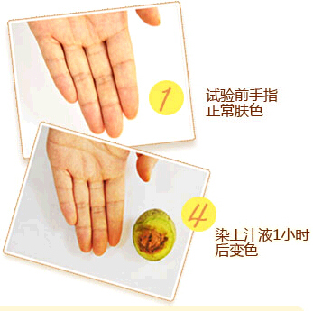
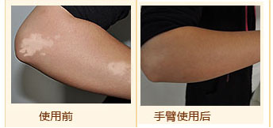
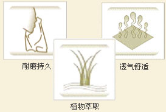
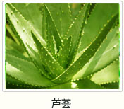

你是否已经被白癜风白癍折磨了好久？你是否试过了很多方法却始终效果不佳？
此刻，你是否迫切的想问我们以下问题？
本色灵安不安全？会不会导致白癍扩散？会不会堵塞毛孔？颜色是否持久？
你最担心的 是我们敢保证的
信誉与保证
100%植物成分，不损坏皮肤。纳米级颗粒，不堵塞毛孔。6小时本色生成，100%防水。7-15天本色持久保持
可食用植物 100%安全可靠
本色灵选用核桃绿皮，栀子花，愧花，芦荟等可食用天然植物为原料科学生产。
植物更安全—核桃皮变色原理
英国悠立朴华公司植物化妆品实验室教授梅纳德，根据皮肤黑色素形成的原理，进行人体仿生学的逆向研究，研制成功可以在皮肤生成类黑色素的科技成分——Melanoid(黑素生成因子)。该成果被刊登在同年的英国皇家医学会的核心期刊《新英格兰医学期刊》。Melanoid(黑素生成因子)是科学人员在核桃皮、栀子花、槐花等植物中科学萃取而来。
Melanoid(黑素生成因子)通过与皮肤细胞的游离氨基酸作用，产生正常肤色极其相似的"棕肤聚合物"，科学界把这种反应称之为"梅纳反应"并得到广泛认可。
2008年知医堂从英国悠立朴华公司引进该技术,经不断实验配比，研制出更适合东方黄色皮肤肤色特点的本色灵肤色遮盖液。本色灵与皮肤角质层形成的天然色素具有色泽自然、防水防汗、持久及安全无毒的优势。
安全吗？效果如何？
防水防汗吗？实验为证!
【实验一】
安全吗？眼见为实—本色灵遮盖原理
专家提示：本实验原理本色灵的遮盖原理相通，其核心成分就是从核桃绿皮，栀子花，愧花等植物中萃取的植物多肽，经实验配比，着色效果稳定，与正常皮肤融合性极好。
安 全 性 测 试
本色灵作为一款遮盖白癜风的产品，安全性自然是关注的焦点，特别是会不会导致白斑扩散，下面我们看看本色灵的安全性测试结果吧。测试结果：本色灵肤色遮盖液非常安全，过敏率极低，可以放心使用。
【实验二】
出汗怎么办—遮盖效果及防水性实验
专家提示：经1677例用户临床实验，98.9%的患者达到1分钟遮住白癍，2小时生产肌肤本色，6小时达到防水防汗的效果。
防 水 性 测 试
本色灵作为一款纯植物的遮盖产品，防水性自然非常重要，也是其效果好坏的重要指标。测试结果：本色灵的防水性能极好，涂抹后5天内肤色覆盖率可在60%以上。
【实验三】
遮盖效果真实吗—与正常皮肤融合性实验
实验结论：经解放军空军总院临床测试，97%的干性皮肤用户对效果满意度（遮盖区域肤色与正常皮肤的融合性）达到100%；99%的中性皮肤用户对效果满意度达到100%；96%的油性皮肤用户对效果满意度达到100%。但肤色较深的人需要根据自己肤色进行第二次或第三次涂抹才可以达到满意遮盖的效果。
五大优势 完美遮盖
1 专门针对东方黄色皮肤人种研制；
2 天然草本萃取植物精华，色泽自然；
3 全部为食用级植物成份，安全无毒；
4 高分子络合作用，防水持久；
5 纳米级透气颗粒，不堵塞毛孔透气舒适。

食用级植物萃取
安全透气遮白癍
本色灵选用核桃绿皮为主原料,及其他天然植物为辅料。核桃未完全成熟前其硬壳上有一层厚度约4mm的绿皮，用手扣开绿皮后，起初手指会变黄，但5个小时左右就会变成黄褐色，半个月都不会掉。本色灵的遮盖原理通俗来讲就和核桃皮能使皮肤变黄褐色是一个道理，因此不会损伤皮肤。更重要的是有效成分经植物萃取技术提炼，提炼出的植物活性多肽Melanoid(黑素生成因子)呈纳米级颗粒状态，所以不论从安全性还是透气性来说都是最棒的科技产品。经大量的临床实验证实，对白斑皮肤有绝佳的遮盖效果，另外对白斑治疗有一定辅助作用。皮肤刺激性实验证明安全，无任何毒副作用。

-- 产品介绍 --
【成分】肤色遮盖液：去离子水，丙二醇，芦芭胶，芦荟液，核桃皮提取物，栀子花提取物，槐花提取物，甜菜提取液，乳酸钠，双脱水山梨糖醇。祛角质凝胶：去离子水、丙烯酸酯共聚物、木瓜蛋白酶、芙蓉花提取物、JM-BP。
【用途】用于皮肤白斑的遮盖美容，用后白斑呈自然肤色。
【注意事项】1、皮肤受伤时不建议使用本品。
2、本品为外用，请置于儿童不易接触到的地方。
【产品标准号】肤色遮盖液：QB/T 2286
祛角质凝胶：Q/TDVH 03
五大人群特别推荐
1、心里压力大，希望遮盖白癍避免社交压力的病因
2、想尝试或已使用其他遮盖产品效果不佳的病友。
3、白癍不断扩散，长期暴露部位的病友。
4、治疗效果不明显，需要遮盖辅助治疗的病友。
5、体检、面试、拍照、宴请等需要遮盖白癍的病友。
-- 客服反馈 --
为什么有些人保持的时间没有5天？
以下做法可适当增长本色灵效果的停留时间： 1）用去角质凝胶祛除皮肤老化角质层。皮肤新生角质不易脱落，和本色灵的结合效果会更持久。 2）用肥皂及热水清洗涂有本色灵的部位。 3）不要用毛巾、手背、指甲用力摩擦涂抹处。
使用本色灵时，若使用其他外用产品怎么?
本色灵并不影响其他外用产品的使用。多数产品不会影响本色灵与皮肤的作用，但是为了避免涂上本色灵后患处与正常皮肤不好区分，建议先涂外用产品后再涂抹本色灵。
本色灵有修复效果吗？
本色灵肤色遮盖液主要作用是遮盖皮肤白斑，从而达到正常肤色，无修复效果。但对抵御能力相对薄弱的白斑皮肤有一定的保护作用。（1）本色灵肤色遮盖液形成的色素能够抵御紫外线对皮肤白斑的灼伤，起到保护作用；（2）对情志因素的影响，白斑给病友带来很大的心理负担，遮盖住了白斑，病友的心情得到了改善，免疫力也就提高了，对于白癜风的控制有较好的作用。
本色灵能遮盖白斑的原理是什么
本色灵的作用原理是皮肤色素生成原理。主要成份选用英国悠立朴华公司皮肤美黑技术－Melanoid(黑素生成因子)，该成份是由核桃皮、栀子花、槐花等植物中科学萃取而来。Melanoid(黑素生成因子)通过与皮肤细胞的游离氨基酸发生作用，产生正常肤色极其相似的"棕肤聚合物"，从而达到遮盖效果。
为什么本色灵是最安全的？
本色灵的主要原材料全部选自食用级的植物（核桃皮、栀子花、槐花等），主要原料为核桃绿皮，北方摘过核桃的人都知道，在核桃还未成熟时有层绿皮，用手拨开绿皮，几分钟后手指就会变成褐色，半个月都洗不掉。本色灵正是利用这个原理来达到白斑皮肤这个效果，本色灵是世界上唯一一款遮盖白斑的核桃皮制剂，它绝对是最安全的。
本色灵遮盖液
企业背景
知医堂是一个有着16年背景的企业，创建至今始终秉承"用最领先的科技，为还原生命的健康美丽而不懈努力"的神圣使命，以"探知健康之源，传递美丽之道，疗浴身心，还原生命青春光彩"为宗旨，多年来，不断开拓与创新，在保健化妆品的研究和开发，以及国际最新技术和科研成果的运用方面取得了可喜的成就与业绩。
-- 产品套装 --
本色灵1盒装 298元
专业白癜风研制。药食同源成分，一涂白癍消，天天好肤色。
本色灵2盒装 498元
全球唯一核桃皮生物制剂，即抹即遮盖，持久不脱色，天天好肤色。
本色灵3盒装 698元
英国仿生学研究成果，纯植物制剂，轻松遮白癍，生活不尴尬。
品质保证
-- 在线订购 --
全国货到付款，快递人员送货上门，当面结算货款，全部商品包邮免运费,，用户资料保密，安全放心。
1.在线提交订单;
2.客服专员电话回访确认订单;
3.货到付款。